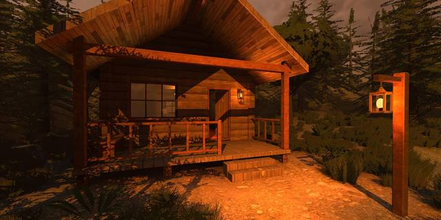

Summary
Technical Artist with 6+ years in real-time Unity and Unreal, focused on lighting. I light scenes from the sun, sky ambient, controlled bounce, reflections and a few support lights, and I build lighting tech that ships on VR and WebGL: a voxel light baker for streamed VR scenes at Highstreet, and the lighting and rendering of NPsynC's digital humans in Unreal Engine. Latest study: one Unity URP cabin lit for dawn, noon, dusk and night.
Skills
- Lighting: Scene and time-of-day lighting, directional sun / moon and sky ambient, real-time and baked lighting, light probes, reflections, bounce control, support spot and area lights, post-processing
- Lighting tech: 3D-texture (voxel) light baking, shader-based relighting (normal / albedo), fog and sky matching, Shader Graph and HLSL lighting shaders
- Performance-aware lighting: Lighting within VR, WebGL and mobile budgets, CPU/GPU profiling, draw-call and overdraw reduction
- Engines: Unity (URP), Unreal Engine (character lighting and rendering, MetaHuman), Three.js / WebGL
- Tools: C#, HLSL, Shader Graph, Blender, Git
Experience
Founder & Technical Artist | NPsynC
Feb 2026 – Present · Dubai, UAE
- Create the company's digital humans in Unreal Engine (MetaHuman): modelling and texturing, rigging outfits, beard and eyebrow grooms, lighting and rendering.
- Co-founded and run NPsynC, which provides AI digital-human staff (front-of-house, assistants, concierges) to government and semi-government agencies and companies.
- Characters talk in real time with live lipsync; NPsynC's own neural lipsync runs locally on the GPU and streams facial animation into Unreal Engine at 60 fps.
Unity Engineer & Technical Artist | Highstreet
Jan 2022 – Mar 2026 · Los Angeles, USA
- Built a voxel light baker that bakes scene lighting into small 3D textures (one texture read per pixel, whatever the light count); a 45×34×45 volume is 268.9 KB, so each streamed VR scene block carries its own lighting. Used in the Arena and Lobby levels.
- Built VR grass: an editor painter, one combined mesh, proximity-activated zones and alpha clip with 4x MSAA, lit by the voxel light baker.
- When dense forest scenes dropped from 60–72 fps to 35–40 fps (sometimes ~15), built a circular-view imposter system: capture tool, texture atlas and a view-blending shader with normal / albedo relighting.
- Led technical art and network programming for Highstreet's VR / PC MMO in Unity, and owned its performance and rendering budgets.
- Wrote custom shaders and tools for the environment art workflow, bridging the asset pipeline and the engine.
- Built a Shader Graph crystal shader: inset-edge meshes, parallax inner layers, sparkles, fake reflections and a growth dissolve.
Technical Artist & Network Programmer | Knotgames
Feb 2021 – Feb 2022
- Wrote custom HLSL shaders for specific art directions while holding 60 fps targets.
- Owned QC, troubleshooting and optimisation of real-time rendering.
- Built network solutions and UI/UX systems for multi-user experiences, and coordinated the work.
Technical Artist (Freelance) | BlueMonocle Software
Jun 2021 – Sep 2021
- Technical art direction for mobile and web projects.
- Earlier contract (Aug 2020 – Mar 2021): React Native front-end development.
C++ Student Support Tutor | SAE Institute
Jun 2020 – Aug 2021
- Tutored students in C++ memory management, pointers and data structures; post-lecture assistant.
Nov 2019 – Aug 2020
- Optimised assets and rendering so large shared event spaces ran smoothly in the browser.
- Built features in C# / Unity for HoloFair, an MMO-style virtual event platform in Unity WebGL and one of the first metaverse / virtual-event projects in the MENA region.
Also: TrueBays Software, full-stack React Native developer (freelance, Jan 2021 – Oct 2021); SAE Institute, game developer and designer (paid internship, Jun 2018 – Jun 2019).
Projects
- Time of Day Lighting Study (Unity URP, 2026): One cabin scene lit for dawn, noon, dusk and night from the sun or moon, sky ambient, controlled bounce, reflections and a few support lights.
- Voxel Light Baker (Unity, VR, 2026 write-up): Lighting baked into 3D textures for streamed VR scenes (see Highstreet).
- Portfolio hero scene (Three.js / WebGL, 2026): Draco cut the land model from 17.65 MB to 1.87 MB (3D payload ~12 MB to ~4.4 MB); clouds in one instanced draw call; adaptive quality below 45 fps; fog matched to the sky.
- Pablo Let's Go Bar (Steam, 2021 · Game Programmer & Rendering): Gameplay and rendering programming; won Best Project at the SAE Showcase 2021.
- Dreamtopia (Steam, 2020 · Lead Developer): Took the game from prototype to Steam release with a team at SAE.
- Mesh to SDF in Unity (Ray marching, 2026): Converts meshes to signed distance fields stored in small 3D textures and ray-marches them.
Education
Bachelor of Games Development (Games Programming) | SAE Institute
2018 – 2021 · GPA 6.5 / 7.0
Achievements
- SAE Showcase Award 2021, Best Project: Pablo Let's Go Bar (Jun 2021).
- Shipped Dreamtopia on Steam (Jan 2020).
- Certificate of Appreciation, Liv. Hackathon, Amity University, Dubai Entrepreneurship Week (Oct 2019).
Languages: English (fluent), Spanish (conversational)

See the work in motionVideos, shader breakdowns and write-ups for every project above.
alwinjoshy.github.io